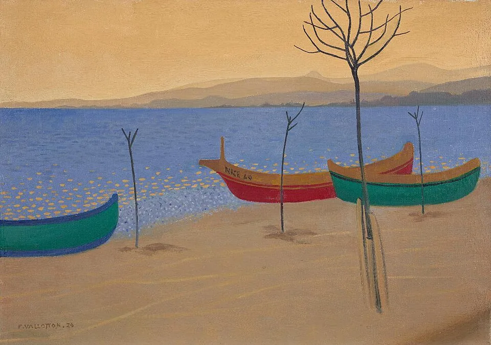

3 days
- Day 1 — Beach + Haut-de-Cagnes + Renoir
- Day 2 — Antibes market + Cap d'Antibes walk
- Day 3 — Saint-Paul-de-Vence + Fondation Maeght
Your French Riviera, curated from the villa.
Cagnes-sur-Mer sits in the exact middle of the Côte d'Azur — which means the whole coast is your back garden. Below is the guide we'd give a close friend: villages, beaches, museums, tables and day trips worth your time, each with the real drive time from our front door, an honest rating, and a one-tap route.
Cagnes-sur-Mer is quieter and more residential than Nice — yet you are never far from the coast's headline destinations. Families love the pool-and-garden reset between outings; couples appreciate village dinners without city traffic; no-car guests can still reach Nice, Antibes and Monaco by train.
Every recommendation below is curated from the villa, with real drive times measured from our front door (off-peak). Drive times are approximate and vary in peak summer traffic.
Approximate drive times from the villa (off-peak). Tap any destination in the guide below for a Google Maps route.
Travelling with children? Sort by family score. No car? Filter train-friendly places. Planning a special night? Sort by luxury — or see what's closest.
Price key: Free · € · €€ · €€€ · Booking advised
Top places near Villa Augflor — enable JavaScript for the full interactive guide with all filters.
Our local sandy beach — 8 min drive. Public access, seafront restaurants, showers, calm water, good for children.
8 min Free
Route from villaMedieval hill village — 8 min. Free shuttle line 44, château, terrace dinners.
8 min Free
Route from villaRenoir's last home and garden — 6 min. Peaceful cultural morning close to the villa.
6 min €€
Route from villaDesigner outlet mall — 10 min. Shopping, cinema, restaurants; ideal rainy day.
10 min €
Route from villaRamparts, Picasso Museum, daily Provençal market — 20 min.
20 min Free
Route from villaWalled village and Fondation Maeght — 20 min. Arrive early for parking in summer.
20 min Free
Route from villaOld town, Cours Saleya market, Promenade des Anglais — 25 min (12 min by train).
25 min €
Route from villaCap d'Antibes sand beach — 25 min. Clear water; book beach club in peak season.
25 min Free
Route from villaWorld-class modern art — 20 min. Book ahead in July/August.
20 min €€
Route from villaBeach clubs, designer shopping, Lérins ferry — 35 min.
35 min Free
Route from villaCasino, palace, Oceanographic Museum — 45 min (train recommended).
45 min €€
Route from villaSummer water park — 15 min. Full family day in peak season.
15 min €€
Route from villaBotanical park and tropical greenhouse — 22 min. Shady, affordable, great with toddlers.
22 min €
Route from villaPerfect crescent bay — 30 min. Train-friendly swimming day.
30 min Free
Route from villaCool canyon escape on hot days — 45 min. Waterfalls and scenic drive.
45 min €
Route from villaLemon town on the Italian border — 55 min. Warmest microclimate on the coast.
55 min Free
Route from villaLegendary art-filled auberge — 20 min. Book terrace lunch ahead in August.
20 min €€€
Route from villaDestination photos are from Wikimedia Commons under Creative Commons licences. Full attribution: photo credits.
Now check your villa dates — or message us and we'll match the itinerary to your stay.
Check your villa dates
Cros-de-Cagnes — local fishermen's beach, calm water, seafront dining.
When the weather turns or the teens need action, you don't need to drive far. Both are under 15 minutes from Villa Augflor.
Open-air designer outlet with 80+ shops, cinema, restaurants and art installations. Ideal for rainy afternoons, last-minute shopping, or an easy evening out.
Indoor karting, bowling, arcade, karaoke, VR and more — a high-energy option for teenagers and mixed-age groups near the coast.
Carrefour / Intermarché at Cros-de-Cagnes or Polygone Riviera.
Bour Pâtisserie — go before 09:00 for the best croissants.
Pharmacie du Cros and centre pharmacies — one is always on duty.
Stations on Route de Grasse / A8 access — fill up before Sunday closures.
La Pesquière on the beach or pizza in Haut-de-Cagnes square.
Cros-de-Cagnes — dip your toes the same day you land.
Polygone Riviera or CAP3000 at Saint-Laurent-du-Var.
With a late flight you can still fit in a final Riviera moment — all within 15–25 minutes of NCE.
Cagnes-sur-Mer station is walkable from Villa Augflor. Direct TER trains serve the whole coast — buy tickets at the station or via SNCF Connect app.
Old town, museums, Cours Saleya market — walk everywhere.
Market, ramparts, Picasso Museum, Juan-les-Pins beach.
Croisette stroll, Lérins ferry, designer shopping.
Palace, aquarium, Casino — no parking stress.
Lemon groves, pastel old town, Italian border.
Calm swimming bay, ochre old town.
Coastal stop; hike or bus up to Èze village.
Private driver or concierge days to wine estates, Saint-Tropez or multiple villages can be arranged — ideal for luxury and wine itineraries. Ask about a private driver →
The A8 and coastal roads slow significantly on summer Saturdays (changeover day) and on Sunday afternoons. Village parking fills by mid-morning — Saint-Paul-de-Vence, Èze and Cap d'Antibes are the toughest. Trains are often faster than driving to Nice, Monaco and Cannes in peak season. Beach clubs and popular restaurants need reservations a week or more ahead in August.
Our tip: Leave early, plan pool afternoons on the hottest days, and use the train for eastbound coastal trips whenever you can.
15 minutes by car via the A8. Private airport transfer on request. Car rental at the airport is recommended if you want full freedom to explore the region.
Cagnes-sur-Mer station runs direct to Nice (≈12 min), Antibes, Cannes (≈25 min) and Monaco (≈35 min). The scenic coastal line also serves Villefranche, Èze-sur-Mer and Menton.
Line 44 (navette gratuite) from Square Bourdet, every 20 minutes, climbs straight to the medieval village — skip the parking entirely.
Wine-estate tours, yacht charters, Monaco and Saint-Tropez days can all be arranged with a private driver, so no one has to drive. Just ask on WhatsApp →
Yes — quieter than Nice, 15 minutes from the airport, and central for Antibes, Saint-Paul-de-Vence, Nice, Cannes, Èze and Monaco. Villa Augflor adds a private pool and garden for calm evenings between outings. View the villa →
A car is recommended for daily flexibility, but many highlights are train-friendly from Cagnes-sur-Mer station. We can arrange airport transfers and chauffeured days for wine tours or Monaco. Filter the guide above by "No car" to see options.
Cros-de-Cagnes beach (8 min), Aquasplash, Parc Phoenix, Oceanographic Museum Monaco, Polygone Riviera, Speed Park, canyoning in the Gorges du Loup, and the Train des Pignes. Sort the guide by family score for the full list.
Cros-de-Cagnes is closest (8 min) — public sandy beach with restaurants and showers. Plage de la Garoupe (25 min) and Juan-les-Pins (22 min) offer longer sandy bays. See our nearest beach section for practical notes.
Both are easy day trips — Cannes ≈35 min by car or ≈25 min by train; Monaco ≈45 min by car or ≈35 min by train. Many guests combine Monaco with the Oceanographic Museum for a family day.
Within 10–20 minutes: Haut-de-Cagnes, Renoir Museum, Cros-de-Cagnes beach, Antibes market, Saint-Paul-de-Vence, Fondation Maeght. Nice, Cannes, Èze, Grasse and Monaco are comfortable day trips. Use the interactive guide to filter by category.
Trains from Cagnes-sur-Mer reach Nice, Antibes, Cannes, Monaco, Villefranche, Èze-sur-Mer and Menton. The free line 44 shuttle climbs to Haut-de-Cagnes. Chauffeured wine and village days can be arranged on request.
Tell us who's travelling and what you love — beaches, art, food, adventure — and we'll send a day-by-day plan with bookings handled. Restaurants, boats, drivers and tastings, all arranged before you arrive.
Plan with us on WhatsApp